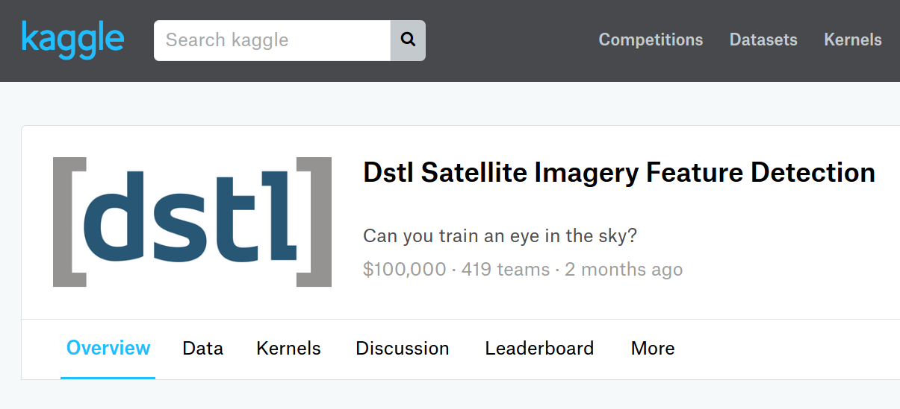

Stephanie Booth's First Forray into Image Analysis

Kaggle hosted a satellite imagery feature detection challenge in late 2016, and while it wasn't realistic to compete while I'm still learning the basics, it still posed a good exercise for applying the fundamentals of image processing and image analysis. I plan to return to this data set periodically as I learn more.
Starting Off: Understanding and visualizing the data (slide right)
I wanted to try my hand at d3, and I also wanted to get a sense of what kind of features were included in my dataset, and what it looks like in real life...
This was easier said than done, when you account for the images being stored as 16-bit, polygons scaled according to a separate file, and repeated failures in parsing WKT format...
Eventually I got it to render, and I think I finally have enough of an understanding of the data to start the analysis.
Analysis